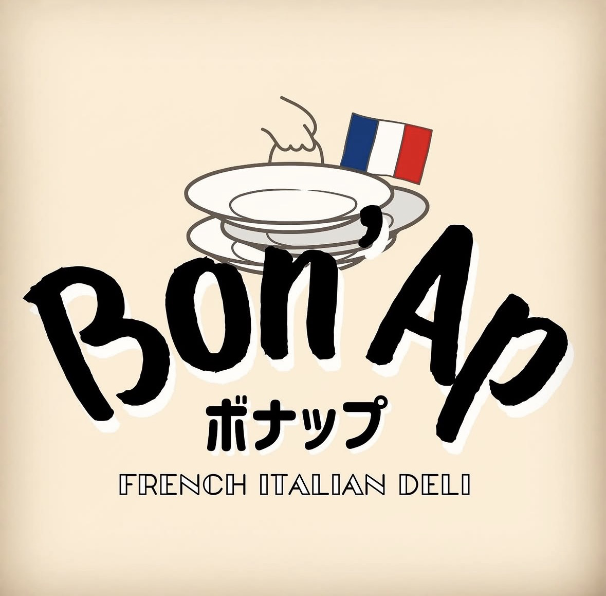
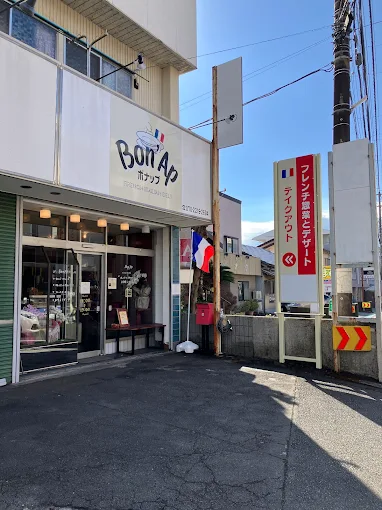

— Izu Kogen · French Italian Deli —
ここでしか出会えない
極上のフレンチイタリアン
Exceptional French-Italian
cuisine, only here.
伊豆高原 テイクアウト専門店
地元の厳選素材をめしあがれ
Take-away specialist in Izu Kogen
Crafted from locally sourced ingredients
OPEN · 水〜日 · 11:00—19:00（日曜は〜15:00） OPEN · WED—SUN · 11:00—19:00 (SUN until 15:00)

· 01 · Notre Concept
作り手の顔が見える、
ふだんの料理を。
Food with a face.
Simple, honest cooking.
パリで修業したシェフが、伊豆高原で見つけた食材に向き合うお店です。きのこ、野菜、地魚、ジビエ。素朴な料理を、そのままの姿でお渡しします。 A shop where a Paris-trained chef meets the finest local ingredients of Izu Kogen — mushrooms, vegetables, fresh fish, game. Simple food, prepared honestly and handed to you as it is.
· 02 · le Chef
シェフについて About the Chef
André
シェフ・アンドレ Chef André
« la cuisine,
c'est honnête. »
料理は、誠実であるべきだ。 Cooking must be honest.
パリで修業を積み、伊豆高原の風土と食材に惹かれ移住。地元の農家、漁師、生産者と対話しながら、その日いちばん良いものを料理に込めます。 Trained in Paris, drawn to the landscape and ingredients of Izu Kogen. André works closely with local farmers and fishermen to bring the best of each day into every dish.

· 04 · Commande
ご注文の流れ How to Order
Commander
ご注文Place Your Order
LINE またはお電話で、前日までに。 Via LINE or phone, by the day before.
Préparer
お仕込みWe Prepare
シェフが当日の朝から、一つずつ。 The chef begins preparation fresh each morning.
Récupérer
お受け取りPick Up
店頭にて、指定のお時間に。 At the shop, at your chosen time.
TEL · 070-2219-2694
· 05 · Instagram
Instagram Follow Us
その日のメニューや旬の食材情報をInstagramで発信しています。 Daily menus and seasonal ingredient stories are shared on Instagram.
@BON_BONAPフォローして、今日のメニューをチェック Follow us to see today's offerings

· 06 · Accès
店舗のご案内 Visit Us
静岡県伊東市八幡野 1189-33 1189-33 Yawatano, Ito City,
Shizuoka 413-0232
日 11:00–15:00 Wed–Sat 11:00–19:00
Sun 11:00–15:00